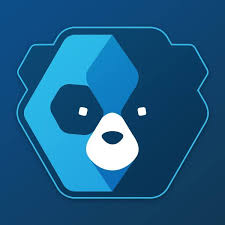
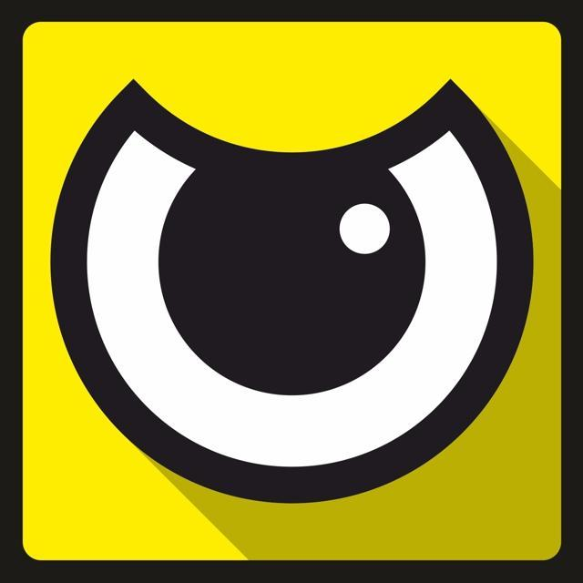
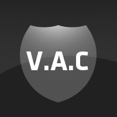
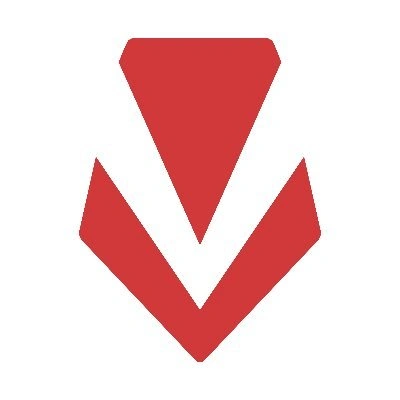

<html lang="pt-BR"></html>
<head>
    <meta charset="UTF-8">
    <meta name="viewport" content="width=device-width, initial-scale=1.0">
    <title>Anti-Cheats Famosos</title>
    <link rel="stylesheet" href="estilo.css">
</head>
<body>
    <header>
        <h1>Anti-Cheats Famosos</h1>
        <nav>
            <ul>
                <li><a href="Inicio.html">Início</a></li>
                <li><a href="Anti-Cheats_Famosos.html">Anti-Cheats Famosos</a></li>
                <li><a href="Tecnologias.html">Tecnologias</a></li>
                <li><a href="Sobre.html">Sobre</a></li>
                <li><a href="Contato.html">Contato</a></li>
            </ul>
        </nav>
    </header>

    <section>
        <h2>Principais Sistemas Anti-Cheat</h2>
        <article>
            <h1><a href="https://www.easyanticheat.net/" target="_blank">1. Easy Anti-Cheat</a></h1>
            
            <p>Easy Anti-Cheat é um nome confiável na indústria de jogos há mais de uma década e continua a ser uma das soluções anti-cheat mais amplamente adotadas. Desenvolvido pela Epic Games, o EAC possui recursos de monitoramento e detecção em tempo real que identificam e removem rapidamente cheats, hacks e modificações não autorizadas. Sua versatilidade permite que ele se integre perfeitamente a uma ampla variedade de jogos em diferentes plataformas, tornando-o uma escolha preferida entre desenvolvedores e editores.</p>
        </article>

        <article>
            <h1><a href="https://www.battleye.com/" target="_blank">2. BattleEye</a></h1>
            
            <p>BattlEye é outro veterano na área anti-cheat. Sua solução protetora baseada em kernel emprega técnicas de detecção específicas e heurísticas/genéricas para maximizar sua eficácia. BattlEye emprega uma combinação de análise comportamental, métodos baseados em assinaturas e detecção heurística para combater vários hacks e cheats que podem ameaçar a integridade de um jogo.</p>
        </article>

        <article>
            <h1><a href="https://www.valvesoftware.com/en/games/counterstrike" target="_blank">3. VAC (Valve Anti-Cheat)</a></h1>
            
            <p>Valve Anti-Cheat, também conhecido como VAC, é um sistema anti-cheat sofisticado e amplamente utilizado, desenvolvido pela Valve Corporation, a empresa por trás da popular plataforma Steam e de uma série de títulos. Os banimentos do VAC são permanentes, inegociáveis ​​e não podem ser removidos.</p>
        </article>

        <article>
            <h1><a href="https://support-valorant.riotgames.com/hc/en-us/categories/360003432933-Installation-Technical-Help" target="_blank">4. Vanguard</a></h1>
            
            <p>Desenvolvido pela Riot Games para Valorant, o Vanguard é um sistema robusto que atua diretamente no nível do kernel do sistema operacional, garantindo máxima segurança e bloqueando trapaças antes mesmo de serem executadas.</p>
        </article>

        <article>
            <h1><a href="https://www.fairfight.com/" target="_blank">5. FairFight</a></h1>
            
            <p>FairFight usa uma abordagem diferente, baseada na análise de comportamento dos jogadores. Presente em jogos como Battlefield e Star Wars Battlefront, ele monitora estatísticas de jogo e detecta comportamentos anômalos.</p>
        </article>
    </section>
    <footer>
        <p>&copy; 2024 Site de Anti-Cheats. Todos os direitos reservados.</p>
    </footer>
</body>
</html>